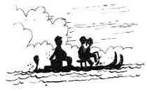

26 Ağustos 1928
Ertesi sabah erkenden Muhittin Dede’nin orada toplanıldı. Müzeyyen Babaanne, Yusuf Amca, Sevim Teyze de oradaydı. Sevim Teyze, gözleri dolu dolu,
— Zafer, emin misin gitmek istediğine oğ-lum?
— Tabii validem! Çok önemli bir şey yapıyoruz burada, arkadaşlarımı yalnız bırakamam.
— Ama gerekirse nasıl yüzeceksin evla-dım?
Yusuf Amca atıldı,
— Onu merak etme, Erim çok iyi yüzücüdür, hem bak can yelekleri de hazırlamış Muhittin Amca’mız.
Belli ki Yusuf Amca, oğlunun, arkadaşlarından hiçbir şekilde geri kalmaması için cesaret veriyordu.
— Bir dakika çocuklar yola çıkmadan şunları takın bakalım, dedi Müzeyyen Babaanne.
Çantasından mavi tülbentler çıkardı; üzerlerinde kahverengi iplikle balık, güneş, ağaç ve çift başlı kartal desenleri işlenmişti ve “Kara Oklar Çetesi” yazıyordu.
— Günlerdir bunlarla uğraşıyorum, Tevfik oğlumdan öğrenip yeni harflerle yazdım. Yalnız böyle soldan sağa yazmak çok acayip oluyor doğrusu.
Erim ve Zafer havalı bir şekilde alınlarına taktılar tülbendi, Nisan boynuna bağladı izciler gibi. İkizlerin gözleri dolmuştu.
— Biz ya biz... Biz de çetenin üyesiyiz ama, ama…
— Sizi unutur muyum hiç, dedi babaanne onlara da verdi tülbentlerini; Sanem ve Simin de bandana gibi alınlarına bağladılar. (“O dönemde bandanayı nereden bilecekler ki” diyorsunuz ya, onlar bilmiyor, ben biliyorum.)
Ahmet Tevfik ikizleri taklit ederek,
— Peki ya beeen?
Gülümsedi Müzeyyen Babaanne,
— Senin de var, benim de, Muhittin Bey’in de.
“Nee?” diye püskürdü Muhittin Dede,
— Tülbent mi takacağım bu yaşta? Estağfurullah estağfurullah! Cık cık...
— Hepimiz takıyoruz, siz de takacaksınız Muhittin Bey. Bakın, ben bile takıyorum.
Müzeyyen Babaanne başörtüsünü çıkarınca altından işlemeli, saçını örttüğü Kara Oklar Çetesi tülbendi çıktı. Alkışlar arasında beybaba da taktı.
— Yalnız ben alnıma değil, Nisoş gibi boynuma takarım, dedi.
— Şimdi de bileklikler, dedi Müzeyyen Babaanne. Kendi işlediği deri bileklikleri çıkardı, herkese dağıttı. Gençler neşe içinde bileklerine geçirdiler, Muhittin Dede de Müzeyyen Babaanne’nin sert bakışlarını görünce çıtını çıkarmadan taktı bilekliği. Şimdi tam bir ekip olmuşlardı.
Nisan deniz bisikletinin ön selesine, Erim arka seleye oturdu, Zafer de sandığın üzerine. Can yelekleri de üstlerindeydi. Yola çıkarken Muhittin Dede bağırdı:
— Unutma Erim, adaya bu taraftan değil, güneyden yaklaşın! Orada kayalıkların oluşturduğu küçük liman gibi bir yer var, tekneyi o limana bırakın. Manastır yıkıntısını tepenin eteklerinde görürsünüz, tekneyi bıraktığınız yere yakın. Dikkat edin kendinize!
Kara Oklar Çetesi’nin üyeleri el salladılar. Neredeyse hiç konuşmuyorlardı, hepsi de çıktıkları bu yolculuğun ne kadar zor olduğunun bilincindeydi. Erim de ekibin lideri olmasının verdiği sorumluluğun farkındaydı.
— Zafer, aman dikkat et, çarka bir şey olmasın!
— Canci, sandığa koydum, hiçbir şey olmaz, yani daha doğrusu ona bir şey olduysa bana da olmuş demektir, sandıkla beraber cumburlop denize azizim!
Üçünün de yüzüne gülümseme geldi. Nisan, “Bönbön hepimize örnek” diye düşündü; “Her zaman eğlenecek bir şey buluyor, hayata hep iyi gözle bakıyor, ülkesini seviyor, dürüst. Başkası olsa onun yerinde, dışarı çıkmamak için elli tane bahane bulur, oysa Zafer hiçbir şeyden yılmıyor.”
Erim arkaya döndü.
— Bir de kimseyi kandırmaz, arkadaşları için her şeyi yapar.
— Nereden biliyorsun ne düşündüğümü?
— Kardeş olduk artık Nisan.
Nisan gülümsedi, “Doğru, benim kardeşim yoktu, kardeş oldunuz bana” diye düşündü.

Güneş gittikçe yükseliyordu, büyüklerin kıyıdaki görüntüleri yavaş yavaş kayboluyordu. Arada yoruldukça mola veriyorlardı. Nisan ve Erim oturdukları yerlerden kalkıp karşılıklı kızaklara dengeyi bozmayacak şekilde geçiyor, bazı jimnastik hareketleri yapıp tekrar yerlerine dönüp pedala basıyorlardı. Geceyi Sivriada’da geçirmek üzere izin almışlardı, ertesi akşam güneş batmadan Samatya’ya dönmeleri gerekiyordu. Eğer akşam sahile ulaşmazlarsa Muhittin Dede liderliğinde bir ekip yola çıkıp “Kara Oklar”a yardıma gidecekti. Adaya ulaşmaları akşamüstünü bulurdu herhâlde.